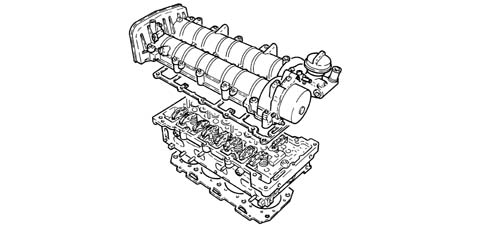
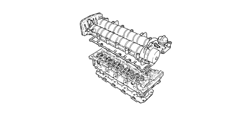

1016E CYLINDER HEAD/S - VARIOUS OPERATIONS
- Path
- Descriptions > 10 ENGINE > 1016 CYLINDER HEAD/S > 1016E CYLINDER HEAD/S - VARIOUS OPERATIONS
- Kind
- system description
- Applies to
- engines: 1.9 JTD 8v, 1.9 JTD 16v, 2.4 JTD 20v; all production periods
- Interactive page
- https://sloeber94.github.io/elrnDB-fCrm/en/#/194002367
Applies to: engines: 1.9 JTD 16v; all production periods
CONSTRUCTION SPECIFICATIONS
The cylinder head is one-piece in aluminium alloy and silicone.
Two, ductile cast iron, overhead camshafts in a camshaft housing; they are operated by a belt and gears.
The four valves per cylinder, parallel and vertical, are positioned in the valve guides and are controlled by rocker arms operated by the camshaft cams and kept in contact with the valves through hydraulic tappets.
The valve guides are an interference fit in the cylinder head seats. A special reamer is used to produce the correct inner diameter after fitting.
Unlike cylinder heads with prechamber, the entire combustion process takes place in the combustion chamber on the piston.
The gasket between cylinder head and crankcsae is metal and the head does not require retightening throughout the engine life.

Applies to: engines: 1.9 JTD 8v; all production periods
CONSTRUCTION SPECIFICATIONS
The cylinder head is one-piece in aluminium alloy and silicone.
The two valves per cylinder, which are parallel and vertical, are fitted in their own valve guides and controlled by a single camshaft whose cams act on mechanical tappets.
The valve guides are an interference fit in the cylinder head seats. A special reamer is used to produce the correct inner diameter after fitting.
Unlike cylinder heads with prechamber, the entire combustion process takes place in the combustion chamber on the piston.
The gasket between cylinder head and crankcsae is metal and the head does not require retightening throughout the engine life.

Applies to: engines: 2.4 JTD 20v; all production periods
CYLINDER HEAD
Specifications
Function
The cylinder head is a structural part of the engine that contains and supports timing system components.
Type
The cylinder head is one-piece in aluminium alloy and silicone.
The two valves per cylinder, which are parallel and vertical, are fitted in their own valve guides and controlled by a single camshaft whose cams act on mechanical tappets.
The valve guides are press-fitted in their seats on the cylinder head with interference. The inner bore is ground to size after fitting using a special reamer.
Unlike cylinder heads with prechamber, the entire combustion process takes place in the combustion chamber on the piston.
The gasket between cylinder head and crankcase is aramidic fibre and the head does not require retightening throughout the engine's lifetime.
